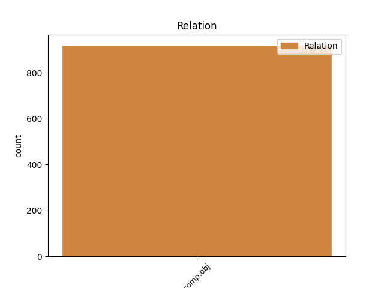
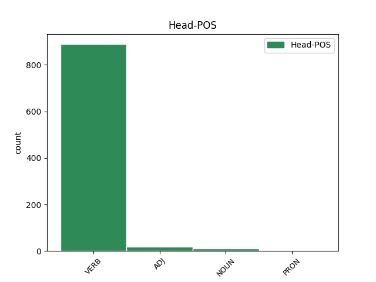
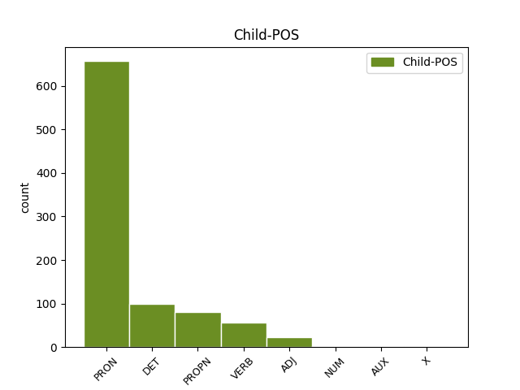

Distribution of features within this leaf



Agreement Rules sorted by frequency.
- When the dependent token is the direct object complements(comp:obj) of the head token, and the dependent token is PRON.
1 Під _ _ _ _ 0 _ _ _
2 час _ _ _ _ 0 _ _ _
3 показу _ _ _ _ 0 _ _ _
4 у _ _ _ _ 0 _ _ _
5 США _ _ _ _ 0 _ _ _
6 , _ _ _ _ 0 _ _ _
7 що _ _ _ _ 0 _ _ _
8 розпочався _ _ _ _ 0 _ _ _
9 18 _ _ _ _ 0 _ _ _
10 вересня _ _ _ _ 0 _ _ _
11 2015 _ _ _ _ 0 _ _ _
12 року _ _ _ _ 0 _ _ _
13 , _ _ _ _ 0 _ _ _
14 протягом _ _ _ _ 0 _ _ _
15 першого _ _ _ _ 0 _ _ _
16 тижня _ _ _ _ 0 _ _ _
17 фільм _ _ _ _ 0 _ _ _
18 був _ _ _ _ 0 _ _ _
19 показаний _ _ _ _ 0 _ _ _
20 у _ _ _ _ 0 _ _ _
21 545 _ _ _ _ 0 _ _ _
22 кінотеатрах _ _ _ _ 0 _ _ _
23 і _ _ _ _ 0 _ _ _
24 зібрав _ _ _ _ 0 _ _ _
25 7 222 035 _ _ _ _ 0 _ _ _
26 $ _ _ _ _ 0 _ _ _
27 , _ _ _ _ 0 _ _ _
28 що _ _ _ _ 0 _ _ _
29 на _ _ _ _ 0 _ _ _
30 той _ _ _ _ 0 _ _ _
31 час _ _ _ _ 0 _ _ _
32 дозволило дозволити VERB Vmeis-sn Aspect=Perf|Gender=Neut|Mood=Ind|Number=Sing|Tense=Past|VerbForm=Fin 0 _ _ _
33 йому він PRON Pp-3m-sdn Case=Dat|Gender=Masc|Number=Sing|Person=3|PronType=Prs 32 comp:obj _ Id=39ri|LTranslit=vin|Translit=jomu
34 зайняти _ _ _ _ 0 _ _ _
35 5 _ _ _ _ 0 _ _ _
36 місце _ _ _ _ 0 _ _ _
37 серед _ _ _ _ 0 _ _ _
38 усіх _ _ _ _ 0 _ _ _
39 прем'єр _ _ _ _ 0 _ _ _
40 . _ _ _ _ 0 _ _ _
1 — _ _ _ _ 0 _ _ _
2 Зараз _ _ _ _ 0 _ _ _
3 буде _ _ _ _ 0 _ _ _
4 біда _ _ _ _ 0 _ _ _
5 , _ _ _ _ 0 _ _ _
6 — _ _ _ _ 0 _ _ _
7 казав казати VERB Vmpis-sm Aspect=Imp|Gender=Masc|Mood=Ind|Number=Sing|Tense=Past|VerbForm=Fin 0 _ _ _
8 Микола _ _ _ _ 0 _ _ _
9 Максимові Максим PROPN Npmsdy Animacy=Anim|Case=Dat|Gender=Masc|NameType=Giv|Number=Sing 7 comp:obj _ Id=39cn|LTranslit=Maksym|SpaceAfter=No|Translit=Maksymovi
10 . _ _ _ _ 0 _ _ _
1 Так _ _ _ _ 0 _ _ _
2 , _ _ _ _ 0 _ _ _
3 вона _ _ _ _ 0 _ _ _
4 швидко _ _ _ _ 0 _ _ _
5 піде _ _ _ _ 0 _ _ _
6 в _ _ _ _ 0 _ _ _
7 Харківському _ _ _ _ 0 _ _ _
8 Держтеатрі _ _ _ _ 0 _ _ _
9 " _ _ _ _ 0 _ _ _
10 Березіль _ _ _ _ 0 _ _ _
11 " _ _ _ _ 0 _ _ _
12 і _ _ _ _ 0 _ _ _
13 одночасно _ _ _ _ 0 _ _ _
14 буде _ _ _ _ 0 _ _ _
15 друкуватися _ _ _ _ 0 _ _ _
16 , _ _ _ _ 0 _ _ _
17 у _ _ _ _ 0 _ _ _
18 журналі _ _ _ _ 0 _ _ _
19 Вільної _ _ _ _ 0 _ _ _
20 Академії _ _ _ _ 0 _ _ _
21 Пролетарської _ _ _ _ 0 _ _ _
22 Літератури _ _ _ _ 0 _ _ _
23 — _ _ _ _ 0 _ _ _
24 " _ _ _ _ 0 _ _ _
25 Вапліте _ _ _ _ 0 _ _ _
26 " _ _ _ _ 0 _ _ _
27 , _ _ _ _ 0 _ _ _
28 де _ _ _ _ 0 _ _ _
29 разом _ _ _ _ 0 _ _ _
30 з _ _ _ _ 0 _ _ _
31 нею _ _ _ _ 0 _ _ _
32 ти _ _ _ _ 0 _ _ _
33 можеш _ _ _ _ 0 _ _ _
34 почитати _ _ _ _ 0 _ _ _
35 прекрасний _ _ _ _ 0 _ _ _
36 новий _ _ _ _ 0 _ _ _
37 роман _ _ _ _ 0 _ _ _
38 " _ _ _ _ 0 _ _ _
39 Вальдшнепи _ _ _ _ 0 _ _ _
40 " _ _ _ _ 0 _ _ _
41 Миколи _ _ _ _ 0 _ _ _
42 Хвильового _ _ _ _ 0 _ _ _
43 , _ _ _ _ 0 _ _ _
44 якого який DET Pr--mysaa Animacy=Anim|Case=Acc|Gender=Masc|Number=Sing|PronType=Rel 48 comp:obj _ Id=2vgt|LTranslit=jakyj|Translit=jakoho
45 ти _ _ _ _ 0 _ _ _
46 вже _ _ _ _ 0 _ _ _
47 давно _ _ _ _ 0 _ _ _
48 знаєш знати VERB Vmpip2s Aspect=Imp|Mood=Ind|Number=Sing|Person=2|Tense=Pres|VerbForm=Fin 0 _ _ _
49 і _ _ _ _ 0 _ _ _
50 любиш _ _ _ _ 0 _ _ _
51 . _ _ _ _ 0 _ _ _
1 Може _ _ _ _ 0 _ _ _
2 вона _ _ _ _ 0 _ _ _
3 і _ _ _ _ 0 _ _ _
4 жалілась _ _ _ _ 0 _ _ _
5 , _ _ _ _ 0 _ _ _
6 скажімо _ _ _ _ 0 _ _ _
7 , _ _ _ _ 0 _ _ _
8 на _ _ _ _ 0 _ _ _
9 чоловіка _ _ _ _ 0 _ _ _
10 - _ _ _ _ 0 _ _ _
11 мамі _ _ _ _ 0 _ _ _
12 , _ _ _ _ 0 _ _ _
13 священику _ _ _ _ 0 _ _ _
14 , _ _ _ _ 0 _ _ _
15 подругам _ _ _ _ 0 _ _ _
16 , _ _ _ _ 0 _ _ _
17 - _ _ _ _ 0 _ _ _
18 і _ _ _ _ 0 _ _ _
19 почула почути VERB Vmeis-sf Aspect=Perf|Gender=Fem|Mood=Ind|Number=Sing|Tense=Past|VerbForm=Fin 0 _ _ _
20 " _ _ _ _ 0 _ _ _
21 що _ _ _ _ 0 _ _ _
22 поробиш поробити VERB Vmeif2s Aspect=Perf|Mood=Ind|Number=Sing|Person=2|Tense=Fut|VerbForm=Fin 19 comp:obj _ Graft=Yes|Id=399b|LTranslit=porobyty|SpaceAfter=No|Translit=porobyš
23 , _ _ _ _ 0 _ _ _
24 терпи _ _ _ _ 0 _ _ _
25 , _ _ _ _ 0 _ _ _
26 то _ _ _ _ 0 _ _ _
27 треба _ _ _ _ 0 _ _ _
28 терпіти _ _ _ _ 0 _ _ _
29 " _ _ _ _ 0 _ _ _
30 . _ _ _ _ 0 _ _ _
1 фантазія _ _ _ _ 0 _ _ _
2 рісує рісувати VERB Vmpip3s Aspect=Imp|Mood=Ind|Number=Sing|Person=3|Tense=Pres|VerbForm=Fin 0 _ _ _
3 трав*яний трав’яний ADJ Ao-msafn Animacy=Inan|Case=Acc|Gender=Masc|Number=Sing 2 comp:obj _ Id=2pat|LTranslit=travjanyj|Promoted=Yes|Translit=trav*janyj
4 чи _ _ _ _ 0 _ _ _
5 листяний _ _ _ _ 0 _ _ _
6 , _ _ _ _ 0 _ _ _
7 екопродукт _ _ _ _ 0 _ _ _
8 лісу _ _ _ _ 0 _ _ _
9 , _ _ _ _ 0 _ _ _
10 де _ _ _ _ 0 _ _ _
11 в _ _ _ _ 0 _ _ _
12 кожного _ _ _ _ 0 _ _ _
13 своя _ _ _ _ 0 _ _ _
14 тотемна _ _ _ _ 0 _ _ _
15 рослина _ _ _ _ 0 _ _ _
16 щасливих _ _ _ _ 0 _ _ _
17 первісних _ _ _ _ 0 _ _ _
18 часів _ _ _ _ 0 _ _ _
19 , _ _ _ _ 0 _ _ _
20 коли _ _ _ _ 0 _ _ _
21 не _ _ _ _ 0 _ _ _
22 було _ _ _ _ 0 _ _ _
23 кордонів _ _ _ _ 0 _ _ _
24 і _ _ _ _ 0 _ _ _
25 бюрократії _ _ _ _ 0 _ _ _
26 . _ _ _ _ 0 _ _ _
1 Шановне _ _ _ _ 0 _ _ _
2 видавництво _ _ _ _ 0 _ _ _
3 , _ _ _ _ 0 _ _ _
4 людина _ _ _ _ 0 _ _ _
5 явно _ _ _ _ 0 _ _ _
6 просто _ _ _ _ 0 _ _ _
7 переймалася перейматися VERB Vmpis-sf Aspect=Imp|Gender=Fem|Mood=Ind|Number=Sing|Tense=Past|VerbForm=Fin 0 _ _ _
8 чи _ _ _ _ 0 _ _ _
9 не _ _ _ _ 0 _ _ _
10 є бути AUX Vapip3s Aspect=Imp|Mood=Ind|Number=Sing|Person=3|Tense=Pres|VerbForm=Fin 7 comp:obj _ Id=1t4r|LTranslit=buty|Translit=ě
11 це _ _ _ _ 0 _ _ _
12 зміщення _ _ _ _ 0 _ _ _
13 чимось _ _ _ _ 0 _ _ _
14 на _ _ _ _ 0 _ _ _
15 зразок _ _ _ _ 0 _ _ _
16 темного _ _ _ _ 0 _ _ _
17 логотипу _ _ _ _ 0 _ _ _
18 на _ _ _ _ 0 _ _ _
19 ваших _ _ _ _ 0 _ _ _
20 класичних _ _ _ _ 0 _ _ _
21 виданнях _ _ _ _ 0 _ _ _
22 " _ _ _ _ 0 _ _ _
23 Гаррі _ _ _ _ 0 _ _ _
24 Поттера _ _ _ _ 0 _ _ _
25 " _ _ _ _ 0 _ _ _
26 , _ _ _ _ 0 _ _ _
27 яке _ _ _ _ 0 _ _ _
28 означало _ _ _ _ 0 _ _ _
29 свого _ _ _ _ 0 _ _ _
30 часу _ _ _ _ 0 _ _ _
31 підробку _ _ _ _ 0 _ _ _
32 книги _ _ _ _ 0 _ _ _
33 ( _ _ _ _ 0 _ _ _
34 пам'ятаю _ _ _ _ 0 _ _ _
35 в _ _ _ _ 0 _ _ _
36 якомусь _ _ _ _ 0 _ _ _
37 виданні _ _ _ _ 0 _ _ _
38 " _ _ _ _ 0 _ _ _
39 Поттера _ _ _ _ 0 _ _ _
40 " _ _ _ _ 0 _ _ _
41 про _ _ _ _ 0 _ _ _
42 це _ _ _ _ 0 _ _ _
43 згадувалося _ _ _ _ 0 _ _ _
44 в _ _ _ _ 0 _ _ _
45 кінці _ _ _ _ 0 _ _ _
46 книги _ _ _ _ 0 _ _ _
47 ) _ _ _ _ 0 _ _ _
48 . _ _ _ _ 0 _ _ _
1 Зокрема _ _ _ _ 0 _ _ _
2 , _ _ _ _ 0 _ _ _
3 у _ _ _ _ 0 _ _ _
4 листі _ _ _ _ 0 _ _ _
5 до _ _ _ _ 0 _ _ _
6 сестри _ _ _ _ 0 _ _ _
7 Ольги _ _ _ _ 0 _ _ _
8 , _ _ _ _ 0 _ _ _
9 датованому _ _ _ _ 0 _ _ _
10 вереснем _ _ _ _ 0 _ _ _
11 1897 _ _ _ _ 0 _ _ _
12 : _ _ _ _ 0 _ _ _
13 « _ _ _ _ 0 _ _ _
14 Тим _ _ _ _ 0 _ _ _
15 часом _ _ _ _ 0 _ _ _
16 не _ _ _ _ 0 _ _ _
17 роблю _ _ _ _ 0 _ _ _
18 , _ _ _ _ 0 _ _ _
19 як _ _ _ _ 0 _ _ _
20 і _ _ _ _ 0 _ _ _
21 перше _ _ _ _ 0 _ _ _
22 , _ _ _ _ 0 _ _ _
23 сливе _ _ _ _ 0 _ _ _
24 нічого _ _ _ _ 0 _ _ _
25 , _ _ _ _ 0 _ _ _
26 от _ _ _ _ 0 _ _ _
27 тільки _ _ _ _ 0 _ _ _
28 половину _ _ _ _ 0 _ _ _
29 « _ _ _ _ 0 _ _ _
30 Kapital’у _ _ _ _ 0 _ _ _
31 » _ _ _ _ 0 _ _ _
32 « _ _ _ _ 0 _ _ _
33 проштудировала _ _ _ _ 0 _ _ _
34 » _ _ _ _ 0 _ _ _
35 ( _ _ _ _ 0 _ _ _
36 « _ _ _ _ 0 _ _ _
37 читати _ _ _ _ 0 _ _ _
38 » _ _ _ _ 0 _ _ _
39 його _ _ _ _ 0 _ _ _
40 не _ _ _ _ 0 _ _ _
41 можна _ _ _ _ 0 _ _ _
42 ) _ _ _ _ 0 _ _ _
43 , _ _ _ _ 0 _ _ _
44 і _ _ _ _ 0 _ _ _
45 , _ _ _ _ 0 _ _ _
46 знаєш _ _ _ _ 0 _ _ _
47 , _ _ _ _ 0 _ _ _
48 чим _ _ _ _ 0 _ _ _
49 далі _ _ _ _ 0 _ _ _
50 читаю _ _ _ _ 0 _ _ _
51 , _ _ _ _ 0 _ _ _
52 тим _ _ _ _ 0 _ _ _
53 більше _ _ _ _ 0 _ _ _
54 розчаровуюсь _ _ _ _ 0 _ _ _
55 : _ _ _ _ 0 _ _ _
56 я _ _ _ _ 0 _ _ _
57 не _ _ _ _ 0 _ _ _
58 бачу бачити VERB Vmpip1s Aspect=Imp|Mood=Ind|Number=Sing|Person=1|Tense=Pres|VerbForm=Fin 0 _ _ _
59 тієї _ _ _ _ 0 _ _ _
60 « _ _ _ _ 0 _ _ _
61 строгой _ _ _ _ 0 _ _ _
62 системы системa X X Animacy=Inan|Case=Gen|Foreign=Yes|Gender=Fem|Number=Sing 58 comp:obj _ Id=00lk|LTranslit=systema|SpaceAfter=No|Translit=systemы
63 » _ _ _ _ 0 _ _ _
64 , _ _ _ _ 0 _ _ _
65 про _ _ _ _ 0 _ _ _
66 яку _ _ _ _ 0 _ _ _
67 говорять _ _ _ _ 0 _ _ _
68 фанатики _ _ _ _ 0 _ _ _
69 сеї _ _ _ _ 0 _ _ _
70 книжки _ _ _ _ 0 _ _ _
71 , _ _ _ _ 0 _ _ _
72 бачу _ _ _ _ 0 _ _ _
73 багато _ _ _ _ 0 _ _ _
74 фактів _ _ _ _ 0 _ _ _
75 , _ _ _ _ 0 _ _ _
76 чимало _ _ _ _ 0 _ _ _
77 дотепних _ _ _ _ 0 _ _ _
78 гіпотез _ _ _ _ 0 _ _ _
79 і _ _ _ _ 0 _ _ _
80 ще _ _ _ _ 0 _ _ _
81 більше _ _ _ _ 0 _ _ _
82 просто _ _ _ _ 0 _ _ _
83 дотепів _ _ _ _ 0 _ _ _
84 , _ _ _ _ 0 _ _ _
85 але _ _ _ _ 0 _ _ _
86 багато _ _ _ _ 0 _ _ _
87 зостається _ _ _ _ 0 _ _ _
88 для _ _ _ _ 0 _ _ _
89 мене _ _ _ _ 0 _ _ _
90 темного _ _ _ _ 0 _ _ _
91 , _ _ _ _ 0 _ _ _
92 невиясненого _ _ _ _ 0 _ _ _
93 , _ _ _ _ 0 _ _ _
94 недоговореного _ _ _ _ 0 _ _ _
95 і _ _ _ _ 0 _ _ _
96 в _ _ _ _ 0 _ _ _
97 науковій _ _ _ _ 0 _ _ _
98 теорії _ _ _ _ 0 _ _ _
99 , _ _ _ _ 0 _ _ _
100 і _ _ _ _ 0 _ _ _
101 в _ _ _ _ 0 _ _ _
102 практичних _ _ _ _ 0 _ _ _
103 виводах _ _ _ _ 0 _ _ _
104 з _ _ _ _ 0 _ _ _
105 неї _ _ _ _ 0 _ _ _
106 . _ _ _ _ 0 _ _ _
Disagree Examples:
1 Лесю Леся PROPN Npfsay Animacy=Anim|Case=Acc|Gender=Fem|NameType=Giv|Number=Sing 3 comp:obj _ Id=006a|LTranslit=Leśа|Translit=Leśu
2 Українку _ _ _ _ 0 _ _ _
3 цензурували цензурувати VERB Vmpis-p Aspect=Imp|Mood=Ind|Number=Plur|Tense=Past|VerbForm=Fin 0 _ _ _
4 надзвичайно _ _ _ _ 0 _ _ _
5 пильно _ _ _ _ 0 _ _ _
6 , _ _ _ _ 0 _ _ _
7 адже _ _ _ _ 0 _ _ _
8 в _ _ _ _ 0 _ _ _
9 радянському _ _ _ _ 0 _ _ _
10 іконостасі _ _ _ _ 0 _ _ _
11 вона _ _ _ _ 0 _ _ _
12 мала _ _ _ _ 0 _ _ _
13 постати _ _ _ _ 0 _ _ _
14 бездоганною _ _ _ _ 0 _ _ _
15 марксисткою _ _ _ _ 0 _ _ _
16 , _ _ _ _ 0 _ _ _
17 « _ _ _ _ 0 _ _ _
18 пролетарською _ _ _ _ 0 _ _ _
19 інтернаціоналісткою _ _ _ _ 0 _ _ _
20 » _ _ _ _ 0 _ _ _
21 , _ _ _ _ 0 _ _ _
22 « _ _ _ _ 0 _ _ _
23 другом _ _ _ _ 0 _ _ _
24 робітників _ _ _ _ 0 _ _ _
25 » _ _ _ _ 0 _ _ _
26 , _ _ _ _ 0 _ _ _
27 предтечею _ _ _ _ 0 _ _ _
28 соціалістичного _ _ _ _ 0 _ _ _
29 реалізму _ _ _ _ 0 _ _ _
30 et _ _ _ _ 0 _ _ _
31 cetera _ _ _ _ 0 _ _ _
32 . _ _ _ _ 0 _ _ _
1 З _ _ _ _ 0 _ _ _
2 особливою _ _ _ _ 0 _ _ _
3 запопадливістю _ _ _ _ 0 _ _ _
4 цензори _ _ _ _ 0 _ _ _
5 вичищали вичищати VERB Vmpis-p Aspect=Imp|Mood=Ind|Number=Plur|Tense=Past|VerbForm=Fin 0 _ _ _
6 все все PRON Pg--nnsan Animacy=Inan|Case=Acc|Gender=Neut|Number=Sing|PronType=Tot 5 comp:obj _ Id=00uu|LTranslit=vse|SpaceAfter=No|Translit=vse
7 , _ _ _ _ 0 _ _ _
8 пов’язане _ _ _ _ 0 _ _ _
9 з _ _ _ _ 0 _ _ _
10 історією _ _ _ _ 0 _ _ _
11 українського _ _ _ _ 0 _ _ _
12 культурного _ _ _ _ 0 _ _ _
13 спротиву _ _ _ _ 0 _ _ _
14 чи _ _ _ _ 0 _ _ _
15 , _ _ _ _ 0 _ _ _
16 іншими _ _ _ _ 0 _ _ _
17 словами _ _ _ _ 0 _ _ _
18 , _ _ _ _ 0 _ _ _
19 культурництвом _ _ _ _ 0 _ _ _
20 як _ _ _ _ 0 _ _ _
21 державницькою _ _ _ _ 0 _ _ _
22 діяльністю _ _ _ _ 0 _ _ _
23 Старої _ _ _ _ 0 _ _ _
24 Громади _ _ _ _ 0 _ _ _
25 та _ _ _ _ 0 _ _ _
26 Плеяди _ _ _ _ 0 _ _ _
27 . _ _ _ _ 0 _ _ _
1 Мєдвєдєв _ _ _ _ 0 _ _ _
2 співав _ _ _ _ 0 _ _ _
3 « _ _ _ _ 0 _ _ _
4 Гетьмани _ _ _ _ 0 _ _ _
5 » _ _ _ _ 0 _ _ _
6 , _ _ _ _ 0 _ _ _
7 « _ _ _ _ 0 _ _ _
8 Олесю _ _ _ _ 0 _ _ _
9 » _ _ _ _ 0 _ _ _
10 , _ _ _ _ 0 _ _ _
11 « _ _ _ _ 0 _ _ _
12 Дощик _ _ _ _ 0 _ _ _
13 » _ _ _ _ 0 _ _ _
14 , _ _ _ _ 0 _ _ _
15 хор _ _ _ _ 0 _ _ _
16 співав співати VERB Vmpis-sm Aspect=Imp|Gender=Masc|Mood=Ind|Number=Sing|Tense=Past|VerbForm=Fin 0 _ _ _
17 « _ _ _ _ 0 _ _ _
18 Гей _ _ _ _ 0 _ _ _
19 не _ _ _ _ 0 _ _ _
20 дивуйте дивувати VERB Vmpm-2p Aspect=Imp|Mood=Imp|Number=Plur|Person=2|VerbForm=Fin 16 comp:obj _ Graft=Yes|Id=00x1|LTranslit=dyvuvaty|SpaceAfter=No|Translit=dyvujte
21 » _ _ _ _ 0 _ _ _
22 , _ _ _ _ 0 _ _ _
23 співачка _ _ _ _ 0 _ _ _
24 Снарская _ _ _ _ 0 _ _ _
25 ( _ _ _ _ 0 _ _ _
26 наша _ _ _ _ 0 _ _ _
27 волинячка _ _ _ _ 0 _ _ _
28 ) _ _ _ _ 0 _ _ _
29 – _ _ _ _ 0 _ _ _
30 « _ _ _ _ 0 _ _ _
31 Чом _ _ _ _ 0 _ _ _
32 , _ _ _ _ 0 _ _ _
33 чом _ _ _ _ 0 _ _ _
34 чорнобров _ _ _ _ 0 _ _ _
35 » _ _ _ _ 0 _ _ _
36 , _ _ _ _ 0 _ _ _
37 а _ _ _ _ 0 _ _ _
38 в _ _ _ _ 0 _ _ _
39 самому _ _ _ _ 0 _ _ _
40 кінці _ _ _ _ 0 _ _ _
41 хор _ _ _ _ 0 _ _ _
42 утяв _ _ _ _ 0 _ _ _
43 « _ _ _ _ 0 _ _ _
44 Српиjа _ _ _ _ 0 _ _ _
45 свободна _ _ _ _ 0 _ _ _
46 » _ _ _ _ 0 _ _ _
47 ( _ _ _ _ 0 _ _ _
48 « _ _ _ _ 0 _ _ _
49 Ще _ _ _ _ 0 _ _ _
50 не _ _ _ _ 0 _ _ _
51 вмерла _ _ _ _ 0 _ _ _
52 Україна _ _ _ _ 0 _ _ _
53 » _ _ _ _ 0 _ _ _
54 ) _ _ _ _ 0 _ _ _
55 . _ _ _ _ 0 _ _ _
1 У _ _ _ _ 0 _ _ _
2 листах _ _ _ _ 0 _ _ _
3 авторка _ _ _ _ 0 _ _ _
4 « _ _ _ _ 0 _ _ _
5 Боярині _ _ _ _ 0 _ _ _
6 » _ _ _ _ 0 _ _ _
7 висловлюється _ _ _ _ 0 _ _ _
8 навпростець _ _ _ _ 0 _ _ _
9 : _ _ _ _ 0 _ _ _
10 « _ _ _ _ 0 _ _ _
11 … _ _ _ _ 0 _ _ _
12 нам ми PRON Pp-1-ypdn Animacy=Anim|Case=Dat|Number=Plur|Person=1|PronType=Prs 17 comp:obj _ Id=01en|LTranslit=my|SpaceAfter=No|Translit=nam
13 , _ _ _ _ 0 _ _ _
14 українцям _ _ _ _ 0 _ _ _
15 , _ _ _ _ 0 _ _ _
16 не _ _ _ _ 0 _ _ _
17 щастила щастити VERB Vmpis-sf Aspect=Imp|Gender=Fem|Mood=Ind|Number=Sing|Tense=Past|VerbForm=Fin 0 _ _ _
18 доля _ _ _ _ 0 _ _ _
19 ніколи _ _ _ _ 0 _ _ _
20 в _ _ _ _ 0 _ _ _
21 тій _ _ _ _ 0 _ _ _
22 Московщині _ _ _ _ 0 _ _ _
23 » _ _ _ _ 0 _ _ _
24 . _ _ _ _ 0 _ _ _
1 Розкажіть розказати VERB Vmem-2p Aspect=Perf|Mood=Imp|Number=Plur|Person=2|VerbForm=Fin 0 _ _ _
2 нам _ _ _ _ 0 _ _ _
3 щось щось PRON Pi--nnsan Animacy=Inan|Case=Acc|Gender=Neut|Number=Sing|PronType=Ind 1 comp:obj _ Id=02db|LTranslit=ščoś|SpaceAfter=No|Translit=ščoś
4 . _ _ _ _ 0 _ _ _